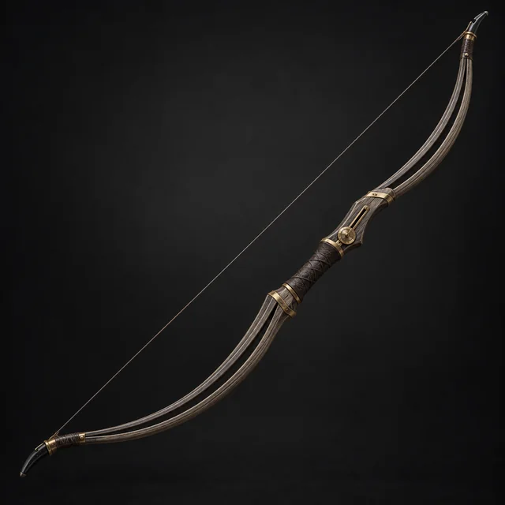

Предмет · Wondrous Loot · №79
Основное оружие. Искусность, Далеко, d6+4, Двуручное. Эхо: вы можете выпустить призрачную стрелу, не наносящую урона, но при попадании перемещающую цель туда, где она была до того, как последний раз оказалась в центре внимания. Когда она окажется там снова она должна повторить свои прошлые действия. Если это невозможно, она отмечает Стресс.
Открыть в генераторе лута